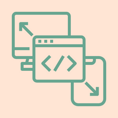

Website Design & Branding Samples
My passion for design and layout carries over from my time in the event design industry. Although I have not had the opportunity to work on any web design projects to date I am greatly looking forward to putting my eye for design to good use in the field of web design.
Front-End Development Samples
During my time thus far in class I have enjoyed learning about the front-end side of web development and look forward to working on more projects in this area to hone my skills.
Back-End Development Samples
At this stage in my studies I have not had the opportunity to learn the back-end side of web development, but I look forward to this next phase.